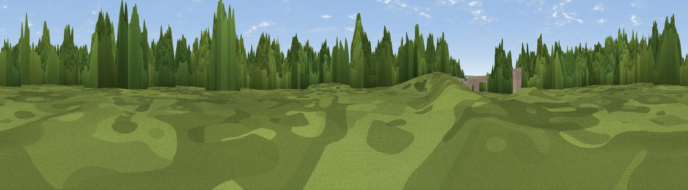

Hartwell Heights
#43700 in England · top 82% of its area beats it · near HartwellWhere it is
The exact computed spot (SP 79265 51130). Click the marker for map links.
The view, rendered

A 360° render of this exact spot computed from the terrain model, tree cover and land cover — summer colours, afternoon light, calibrated against photographs of famous viewpoints. Real trees, hedges and buildings will differ in detail.
The panorama
Grey silhouette: terrain skyline in each direction (720 bearings, Earth curvature and refraction included). Dashed green: skyline with trees (+15 m) and buildings (+8 m) as obstacles. Blue strip: how far the ground is visible on each bearing.
Where the view opens
Wedge length = distance to the farthest visible ground on that bearing (vegetation-aware). Rings at 10, 25 and 50 km.
What fills the view
56% woodland · 20% cropland · 17% grassland · 7% built-up
Angular shares of the visible panorama (visual magnitude), not map area. Landscape diversity 0.49 (0–1 Shannon).
Key numbers
More beautiful places nearby
The staircase of upgrades: each row has a higher view potential than everything closer. Driving times are estimates from straight-line distance, calibrated against real road routing — check an actual route before setting out.
| Place | Direction | Drive | Score |
|---|---|---|---|
| Salcey Heights | NNW · 1 km | ~3 min | 23.1 |
| Olney Beacon | E · 9 km | ~17 min | 24.1 |
| Gayton View | WNW · 10 km | ~19 min | 27.9 |
| Viewpoint near Sherington | ESE · 12 km | ~22 min | 29.0 |
| Viewpoint near Bugbrooke | WNW · 12 km | ~22 min | 36.8 |
| Potcote Hill | W · 13 km | ~23 min | 43.6 |
| Glassthorpe Hill | NW · 16 km | ~28 min | 44.2 |
| Viewpoint near Bow Brickhill | SE · 20 km | ~35 min | 48.9 |
52.15278, -0.84287 · source: osm peak · position refined by local search. Computed location — check access rights before visiting.